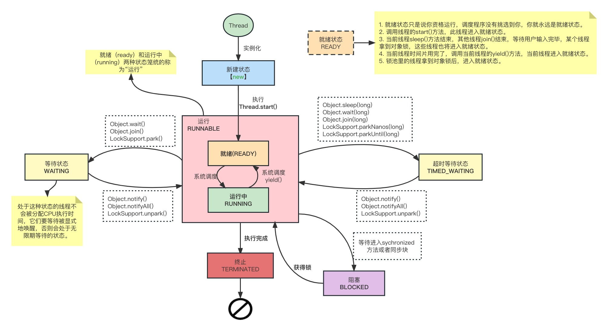

[TOC]
Thread 类 & Runnable 接口
interface Runnale 源码
一个FunctionalInterface
@FunctionalInterface
public interface Runnable {
/**
* When an object implementing interface <code>Runnable</code> is used
* to create a thread, starting the thread causes the object's
* <code>run</code> method to be called in that separately executing
* thread.
* <p>
* The general contract of the method <code>run</code> is that it may
* take any action whatsoever.
*
* @see java.lang.Thread#run()
*/
public abstract void run();
}
- 显然可以利用
Java8 lambda - 其次一个类实现了
Runnable接口，而不是继承Thread, 那么其只是有run()方法，没有所谓的start()方法
线程真正的执行逻辑是在run(), 通常称为线程的执行单元
class Thread 源码
class Thread implements Runnable {
// 成员变量
/* Java thread status for tools,
* initialized to indicate thread 'not yet started'
*/
private volatile int threadStatus = 0;
/* The group of this thread */
private ThreadGroup group;
/* For autonumbering anonymous threads. */
private static int threadInitNumber;
private static synchronized int nextThreadNum() {
return threadInitNumber++;
}
// 常见构造方法
public Thread(Runnable target) {
init(null, target, "Thread-" + nextThreadNum(), 0);
}
public Thread(ThreadGroup group, String name) {
init(group, null, name, 0);
}
init
- 一个线程的创建肯定是由另一个线程完成的(线程的父子关系)
- 被创建线程的父线程是创建它的线程
/**
* Initializes a Thread.
*
* @param g the Thread group
* @param target the object whose run() method gets called
* @param name the name of the new Thread
* @param stackSize the desired stack size for the new thread, or
* zero to indicate that this parameter is to be ignored.
* @param acc the AccessControlContext to inherit, or
* AccessController.getContext() if null
* @param inheritThreadLocals if {@code true}, inherit initial values for
* inheritable thread-locals from the constructing thread
*/
private void init(ThreadGroup g, Runnable target, String name,
long stackSize, AccessControlContext acc,
boolean inheritThreadLocals) {
if (name == null) {
throw new NullPointerException("name cannot be null");
}
this.name = name;
Thread parent = currentThread();
SecurityManager security = System.getSecurityManager();
if (g == null) {
/* Determine if it's an applet or not */
/* If there is a security manager, ask the security manager
what to do. */
if (security != null) {
g = security.getThreadGroup();
}
/* If the security doesn't have a strong opinion of the matter
use the parent thread group. */
if (g == null) {
g = parent.getThreadGroup();
}
}
/* checkAccess regardless of whether or not threadgroup is
explicitly passed in. */
g.checkAccess();
/*
* Do we have the required permissions?
*/
if (security != null) {
if (isCCLOverridden(getClass())) {
security.checkPermission(SUBCLASS_IMPLEMENTATION_PERMISSION);
}
}
g.addUnstarted();
this.group = g;
this.daemon = parent.isDaemon();
this.priority = parent.getPriority();
if (security == null || isCCLOverridden(parent.getClass()))
this.contextClassLoader = parent.getContextClassLoader();
else
this.contextClassLoader = parent.contextClassLoader;
this.inheritedAccessControlContext =
acc != null ? acc : AccessController.getContext();
this.target = target;
setPriority(priority);
if (inheritThreadLocals && parent.inheritableThreadLocals != null)
this.inheritableThreadLocals =
ThreadLocal.createInheritedMap(parent.inheritableThreadLocals);
/* Stash the specified stack size in case the VM cares */
this.stackSize = stackSize;
/* Set thread ID */
tid = nextThreadID();
}
Thread 的 start() & run()
- run()
@Override
public void run() {
if (target != null) {
target.run();
}
}
- start()
public synchronized void start() {
/**
* This method is not invoked for the main method thread or "system"
* group threads created/set up by the VM. Any new functionality added
* to this method in the future may have to also be added to the VM.
*
* A zero status value corresponds to state "NEW".
*/
if (threadStatus != 0)
throw new IllegalThreadStateException();
// 加入到线程组中
/* Notify the group that this thread is about to be started
* so that it can be added to the group's list of threads
* and the group's unstarted count can be decremented. */
group.add(this);
boolean started = false;
try {
start0();
started = true;
} finally {
try {
if (!started) {
group.threadStartFailed(this);
}
} catch (Throwable ignore) {
/* do nothing. If start0 threw a Throwable then
it will be passed up the call stack */
}
}
}
// start0()会新运行一个线程，新线程会调用run()方法
private native void start0();
需要注意的点
start方法用synchronized修饰，为同步方法；表示真正的去执行线程- 虽然为同步方法，但不能避免多次调用问题；所以用threadStatus来记录线程状态，如果线程被多次start调用会抛出异常；threadStatus的状态由JVM控制。
- 使用Runnable时，主线程无法捕获子线程中的异常状态。线程的异常，应在线程内部解决。
区别：start()是让另一个新线程开启，并执行其中的run方法；run()是直接当前线程执行其run方法.run方法一般称为线程的执行单元
when program calls start() method, a new thread is created and code inside run() is executed in new thread.Thread.start() calls the run() method asynchronousl（异步的）,which changes the state of new Thread to Runnable.
call run() method directly no new thread will be created and code inside run() will execute in the current thread directly.
native方法start0():调用JVM方法创建一个本地线程，并处于可运行状态；获取到CPU时间片就能执行run方法
start0(); method: is responsible for low processing (stack creation for a thread and allocating thread in processor queue) at this point we have a thread in Ready/Runnable state.
stackSize(线程所需栈空间)
/*
* The requested stack size for this thread, or 0 if the creator did
* not specify a stack size. It is up to the VM to do whatever it
* likes with this number; some VMs will ignore it.
*/
private long stackSize;
操作系统对一个进程的最大内存是有限制的
虚拟机栈是线程私有的，即每个线程都会占有指定大小的内存(
-Xss，默认1M)JVM能创建多少个线程，与堆内存，栈内存的大小有直接的关系，只不过栈内存更明显一些； 线程数目还与操作系统的一些内核配置有很大的关系；生产上要监控线程数量，可能会由于bug导致线程数异常增多，引发心跳,OutOfMemory告警
线程安全
- 什么是线程安全问题？
当多个线程共享同一个全局变量，做写的时候，可能会收到其它线程的干扰，导致数据有问题，这中现象叫做线程安全问题
关键词：共享数据，多线程，并发写操作
线程的状态
Java线程的6种状态
- NEW
- RUNNABLE(可运行状态，运行状态，阻塞状态)
- BLOCKED
- WAITING
- TIMED WAITING
TERMINATED
Thread类源码
/**
* A thread state. A thread can be in one of the following states:
* <ul>
* <li>{@link #NEW}<br>
* A thread that has not yet started is in this state.
* </li>
* <li>{@link #RUNNABLE}<br>
* A thread executing in the Java virtual machine is in this state.
* </li>
* <li>{@link #BLOCKED}<br>
* A thread that is blocked waiting for a monitor lock
* is in this state.
* </li>
* <li>{@link #WAITING}<br>
* A thread that is waiting indefinitely for another thread to
* perform a particular action is in this state.
* </li>
* <li>{@link #TIMED_WAITING}<br>
* A thread that is waiting for another thread to perform an action
* for up to a specified waiting time is in this state.
* </li>
* <li>{@link #TERMINATED}<br>
* A thread that has exited is in this state.
* </li>
* </ul>
*
* <p>
* A thread can be in only one state at a given point in time.
* These states are virtual machine states which do not reflect
* any operating system thread states.
*
* @since 1.5
* @see #getState
*/
public enum State {
/**
* Thread state for a thread which has not yet started.
*/
NEW,
/**
* Thread state for a runnable thread. A thread in the runnable
* state is executing in the Java virtual machine but it may
* be waiting for other resources from the operating system
* such as processor.
*/
RUNNABLE,
/**
* Thread state for a thread blocked waiting for a monitor lock.
* A thread in the blocked state is waiting for a monitor lock
* to enter a synchronized block/method or
* reenter a synchronized block/method after calling
* {@link Object#wait() Object.wait}.
*/
BLOCKED,
/**
* Thread state for a waiting thread.
* A thread is in the waiting state due to calling one of the
* following methods:
* <ul>
* <li>{@link Object#wait() Object.wait} with no timeout</li>
* <li>{@link #join() Thread.join} with no timeout</li>
* <li>{@link LockSupport#park() LockSupport.park}</li>
* </ul>
*
* <p>A thread in the waiting state is waiting for another thread to
* perform a particular action.
*
* For example, a thread that has called <tt>Object.wait()</tt>
* on an object is waiting for another thread to call
* <tt>Object.notify()</tt> or <tt>Object.notifyAll()</tt> on
* that object. A thread that has called <tt>Thread.join()</tt>
* is waiting for a specified thread to terminate.
*/
WAITING,
/**
* Thread state for a waiting thread with a specified waiting time.
* A thread is in the timed waiting state due to calling one of
* the following methods with a specified positive waiting time:
* <ul>
* <li>{@link #sleep Thread.sleep}</li>
* <li>{@link Object#wait(long) Object.wait} with timeout</li>
* <li>{@link #join(long) Thread.join} with timeout</li>
* <li>{@link LockSupport#parkNanos LockSupport.parkNanos}</li>
* <li>{@link LockSupport#parkUntil LockSupport.parkUntil}</li>
* </ul>
*/
TIMED_WAITING,
/**
* Thread state for a terminated thread.
* The thread has completed execution.
*/
TERMINATED;
}

阻塞(blocked)：阻塞状态是指线程因为某种原因放弃了cpu使用权，也即让出了cpu时间片，暂时停止运行。直到线程进入可运行(runnable)状态，才有机会再次获得cpu时间片，转到运行(running)状态。阻塞的情况分三种：
等待阻塞：运行(running)的线程执行
o.wait()方法，JVM会把该线程放入等待队列(waitting queue)中。同步阻塞：运行(running)的线程在获取对象的同步锁时，若该同步锁被别的线程占用，则JVM会把该线程放入锁池(lock pool)中。
其它阻塞：运行(running)的线程执行
Thread.sleep(long ms)或t.join()方法，或者发出了I/O请求时，JVM会把该线程置为阻塞状态。当sleep()状态超时、join()等待线程终止或者超时、或者I/O处理完毕时，线程重新转入可运行(runnable)状态。
验证6种状态
public class Main {
public static void main(String[] args) throws Exception{
Thread t1 = new Thread(()->{
System.out.println("t1 running");
},"t1");
Thread t2 = new Thread(()->{
while (true){
}
},"t2");
t2.start();
Thread t3 = new Thread(()->{
// do sth
// System.out.println("t3 running");
}, "t3");
t3.start();
Thread t4 = new Thread(()->{
synchronized (Main.class){
try{
// 有限时间的等待
TimeUnit.SECONDS.sleep(100); // TIMED_WAITING
}catch (Exception e){
e.printStackTrace();
}
}
}, "t4");
t4.start();
Thread t5 = new Thread(()->{
try{
// 无限时间的等待
t2.join(); // WAITING
}catch (Exception e){
e.printStackTrace();
}
}, "t5");
t5.start();
Thread t6 = new Thread(()->{
synchronized (Main.class){ // 竞争锁，竞争不到，BLOCKED
try{
TimeUnit.SECONDS.sleep(100);
}catch (Exception e){
e.printStackTrace();
}
}
}, "t6");
t6.start();
TimeUnit.SECONDS.sleep(1);
System.out.println("t1 status:" + t1.getState());
System.out.println("t2 status:" + t2.getState());
System.out.println("t3 status:" + t3.getState());
System.out.println("t4 status:" + t4.getState());
System.out.println("t5 status:" + t5.getState());
System.out.println("t6 status:" + t6.getState());
}
}
- 输出
t1 status:NEW
t2 status:RUNNABLE
t3 status:TERMINATED
t4 status:TIMED_WAITING
t5 status:WAITING
t6 status:BLOCKED
jvisualvm的线程状态

操作系统定义线程的5种状态
- 初始状态（new）
- 可运行状态/就绪状态（与操作系统关联，有了CPU时间片就可以运行起来，准备就绪中）
- 运行状态（获取到CPU时间片，则在运行中；如果CPU时间片用完，则会变成[可运行状态]）
- 阻塞状态（等待/阻塞/睡眠，操作系统不考虑给这种状态线程分配CPU时间片，唤醒后变成[可运行状态]）
- 终止状态（结束）
线程的上下文切换（Thread Context Switch）
由于某些原因CPU不执行当前线程，转而去执行其它线程
- 当前线程的CPU时间片用完
- 垃圾回收（STW）
- 有比该线程更高优先级的线程需要运行
- 线程调用了sleep,yield,wait,join,park,synchronized,lock等方法导致等待/阻塞等
当Context Switch发生时，需要有操作系统保存当前线程的状态，并恢复另一个线程的状态；每个线程都有一个程序计数器（Program Counter Register）,它的作用是记住下一条JVM指令的地址，这个程序计数器是线程独有的
- 状态包括程序计数器，虚拟机栈中每个线程栈帧的信息，如局部变量，操作数栈，返回地址等
Context Switch频繁发生会影响性能
Monitor
Monitors – The Basic Idea of Java Synchronization
对象的wait,notify方法
wait, notify的简单使用
- wait: 在其它线程调用此对象的
notify()方法或notifyAll()方法前，导致当前线程等待 - notify: 唤醒在此对象监视器上等待的单个线程,如果所有线程都在此对象上等待，则会选择唤醒其中一个线程。选择是任意性的，并在对实现做出决定时发生。线程通过调用其中一个 wait 方法，在对象的监视器上等待。
sleep方法没有释放锁，而wait方法释放了锁，使得其它线程可以使用同步控制块或方法；sleep是让出CPU给其它线程
参考文档： https://www.baeldung.com/java-wait-notify
Simply put, when we call wait() – this forces the current thread to wait until some other thread invokes notify() or notifyAll() on the same object.(当调用wait()后，当前线程将等待其它线程调用notity())
For this, the current thread must own the object's monitor. According to Javadocs, this can happen when:
we've executed synchronized instance method for the given object
we've executed the body of a synchronized block on the given object
by executing synchronized static methods for objects of type Class
Note that only one active thread can own an object's monitor at a time.
The wait() method causes the current thread to wait indefinitely until another thread either invokes notify() for this object or notifyAll().
class ThreadA extends Thread{
public ThreadA(String name) {
super(name);
}
@Override
public void run() {
synchronized (this) {
try {
System.out.println("run start");
Thread.sleep(1000); // 使当前线阻塞 1 s，确保主程序的 t1.wait(); 执行之后再执行 notify()
System.out.println("run end");
} catch (Exception e) {
e.printStackTrace();
}
System.out.println(Thread.currentThread().getName()+" call notify()");
// 唤醒当前的wait线程
this.notify();
}
}
}
public class Main {
// main 线程
public static void main(String[] args) {
ThreadA t1 = new ThreadA("t1");
synchronized(t1) {
try {
// 启动“线程t1”
System.out.println(Thread.currentThread().getName()+" start");
t1.start();
// 主线程等待t1通过notify()唤醒。
System.out.println(Thread.currentThread().getName()+" wait()");
t1.wait(); // 不是使t1线程等待，而是当前执行wait的线程等待
System.out.println(Thread.currentThread().getName()+" continue");
} catch (InterruptedException e) {
e.printStackTrace();
}
}
}
}
/*
main start t1
main wait()
run start
run end
t1 call notify()
main continue
*/
wait底层原理
wait java源码
/**
* Causes the current thread to wait until another thread invokes the
* {@link java.lang.Object#notify()} method or the
* {@link java.lang.Object#notifyAll()} method for this object.
* In other words, this method behaves exactly as if it simply
* performs the call {@code wait(0)}.
* <p>
* The current thread must own this object's monitor. The thread
* releases ownership of this monitor and waits until another thread
* notifies threads waiting on this object's monitor to wake up
* either through a call to the {@code notify} method or the
* {@code notifyAll} method. The thread then waits until it can
* re-obtain ownership of the monitor and resumes execution.
* <p>
* As in the one argument version, interrupts and spurious wakeups are
* possible, and this method should always be used in a loop:
* <pre>
* synchronized (obj) {
* while (<condition does not hold>)
* obj.wait();
* ... // Perform action appropriate to condition
* }
* </pre>
* This method should only be called by a thread that is the owner
* of this object's monitor. See the {@code notify} method for a
* description of the ways in which a thread can become the owner of
* a monitor.
*
* @throws IllegalMonitorStateException if the current thread is not
* the owner of the object's monitor.
* @throws InterruptedException if any thread interrupted the
* current thread before or while the current thread
* was waiting for a notification. The <i>interrupted
* status</i> of the current thread is cleared when
* this exception is thrown.
* @see java.lang.Object#notify()
* @see java.lang.Object#notifyAll()
*/
public final void wait() throws InterruptedException {
wait(0);
}
public final native void wait(long timeout) throws InterruptedException;
notify java源码
/**
* Wakes up a single thread that is waiting on this object's
* monitor. If any threads are waiting on this object, one of them
* is chosen to be awakened. The choice is arbitrary and occurs at
* the discretion of the implementation. A thread waits on an object's
* monitor by calling one of the {@code wait} methods.
* <p>
* The awakened thread will not be able to proceed until the current
* thread relinquishes the lock on this object. The awakened thread will
* compete in the usual manner with any other threads that might be
* actively competing to synchronize on this object; for example, the
* awakened thread enjoys no reliable privilege or disadvantage in being
* the next thread to lock this object.
* <p>
* This method should only be called by a thread that is the owner
* of this object's monitor. A thread becomes the owner of the
* object's monitor in one of three ways:
* <ul>
* <li>By executing a synchronized instance method of that object.
* <li>By executing the body of a {@code synchronized} statement
* that synchronizes on the object.
* <li>For objects of type {@code Class,} by executing a
* synchronized static method of that class.
* </ul>
* <p>
* Only one thread at a time can own an object's monitor.
*
* @throws IllegalMonitorStateException if the current thread is not
* the owner of this object's monitor.
* @see java.lang.Object#notifyAll()
* @see java.lang.Object#wait()
*/
public final native void notify();
- Java中每一个对象都可以成为一个监视器（Monitor）, 该Monitor由一个锁(lock), 一个等待队列(WaitingQueue，阻塞状态，等待被唤醒调度), 一个入口队列(EntryQueue,要去竞争获取锁).
waiting进入_waitSet等待中(底层通过执行thread_ParkEvent->park来挂起线程)，等待被唤醒，不会占用CPUwaiting被唤醒后，不是直接执行，而是进入_EntryList(没有获取到锁的Blocking状态，要继续竞争锁)，去竞争monitor来获得机会去执行

wait 和 sleep 的区别？
wait()方法属于Object类,sleep()属于Thread类；
wait()方法让自己让出锁资源进入等待池等待，会让出CPU；sleep是继续占用锁(依赖于系统时钟和CPU调度机制)，处于阻塞状态，会让出CPU；
sleep()必须指定时间，wait()可以指定时间也可以不指定；sleep()时间到，线程处于阻塞或可运行状态；
wait()方法会释放持有的锁，调用notify(),notifyAll()方法来唤醒线程；sleep方法不会释放持有的锁，设置sleep的时间是确定的会按时执行的，超时或者
interrupt()能唤醒wait()方法只能在同步方法或同步代码块中调用，否则会报
illegalMonitorStateException异常，如果没有设定时间，使用notify()来唤醒；而sleep()能在任何地方调用；
ThreadGroup线程组
线程组认识
ThreadGroup tg = new ThreadGroup("tg");
Thread tr = new Thread(tg, "tr");
// 不断获取上一级的 线程组
ThreadGroup tg_parent = tr.getThreadGroup();
while(tg_parent != null){
System.out.println(tg_parent);
tg_parent = tg_parent.getParent();
}
- output
java.lang.ThreadGroup[name=tg,maxpri=10]
java.lang.ThreadGroup[name=main,maxpri=10]
java.lang.ThreadGroup[name=system,maxpri=10]
ThreadGroup tg = new ThreadGroup("tg");
Thread tr = new Thread(tg,"tr");
// 不断获取上一级的 线程组
ThreadGroup tg_parent = tr.getThreadGroup();
while(tg_parent.getParent() != null){
tg_parent = tg_parent.getParent();
}
// 打印 线程组 的树
tg_parent.list();
- output
java.lang.ThreadGroup[name=system,maxpri=10]
Thread[Reference Handler,10,system]
Thread[Finalizer,8,system]
Thread[Signal Dispatcher,9,system]
java.lang.ThreadGroup[name=main,maxpri=10]
Thread[main,5,main]
Thread[Monitor Ctrl-Break,5,main]
java.lang.ThreadGroup[name=tg,maxpri=10]
Thread tr = new Thread("tr");
ThreadGroup tg_parent = tr.getThreadGroup();
System.out.println(tg_parent);
- output
java.lang.ThreadGroup[name=main,maxpri=10]
ThreadGroup源码
/**
* A thread group represents a set of threads. In addition, a thread
* group can also include other thread groups. The thread groups form
* a tree in which every thread group except the initial thread group
* has a parent.
* <p>
* A thread is allowed to access information about its own thread
* group, but not to access information about its thread group's
* parent thread group or any other thread groups.
*
* @author unascribed
* @since JDK1.0
*/
/* The locking strategy for this code is to try to lock only one level of the
* tree wherever possible, but otherwise to lock from the bottom up.
* That is, from child thread groups to parents.
* This has the advantage of limiting the number of locks that need to be held
* and in particular avoids having to grab the lock for the root thread group,
* (or a global lock) which would be a source of contention on a
* multi-processor system with many thread groups.
* This policy often leads to taking a snapshot of the state of a thread group
* and working off of that snapshot, rather than holding the thread group locked
* while we work on the children.
*/
public
class ThreadGroup implements Thread.UncaughtExceptionHandler {
线程组表示一个线程的集合。线程组也可以包含其它线程组。
守护(Daemon)线程
- The Java Virtual Machine exits when the only threads running are all daemon threads
如果一个JVM进程中一个非守护线程都没有，那么JVM会退出，即守护线程具备自动结束生命周期的特性。
守护线程的优先级比较低，用于为系统中的其它对象和线程提供服务；线程对象创建之前，用线程对象的setDaemon(true)方法。
典型的守护线程如：Java垃圾回收线程
class DaemonThread extends Thread{
@Override
public void run() {
while (true){
try{
System.out.println(this.getClass().getName());
Thread.sleep(1_000L);
}catch (Exception e){
e.printStackTrace();
}
}
}
}
public class Main {
public static void main(String[] args) throws Exception{
DaemonThread daemonThread = new DaemonThread();
daemonThread.setName("DaemonThread");
daemonThread.setDaemon(true);
daemonThread.start();
System.out.println(daemonThread.isDaemon());
Thread.sleep(2_000L);
System.out.println("Main thread finished");
}
}
- output
com.parallel.DaemonThread
true
com.parallel.DaemonThread
Main thread finished
Java的两类Thread
用户线程：Java虚拟机在它所有非守护线程已经离开后自动离开
守护线程：守护线程则是用来服务用户线程的，如果没有其它用户线程在运行，那么就没有可服务对象，也就没有理由继续下去
Thread API
sleep
public static native void sleep(long millis) throws InterruptedException
public static void sleep(long millis, int nanos) hrows InterruptedException
// 人性化设置休眠时间的sleep
package java.util.concurrent
TimeUnit
sleep休眠不会放弃monitor锁的所有权，各个线程的休眠不会相互影响，sleep只会导致当前线程休眠
yield
vt.屈服，投降; 生产; 获利; 不再反对;
vi.放弃，屈服; 生利; 退让，退位;
n.产量，产额; 投资的收益; 屈服，击穿; 产品;
启发式的方式：提醒调度器愿意放弃当前CPU资源，如果CPU资源不紧张，则会忽略这种提醒
/**
* A hint to the scheduler that the current thread is willing to yield
* its current use of a processor. The scheduler is free to ignore this
* hint.
*
* <p> Yield is a heuristic attempt to improve relative progression
* between threads that would otherwise over-utilise a CPU. Its use
* should be combined with detailed profiling and benchmarking to
* ensure that it actually has the desired effect.
*
* <p> It is rarely appropriate to use this method. It may be useful
* for debugging or testing purposes, where it may help to reproduce
* bugs due to race conditions. It may also be useful when designing
* concurrency control constructs such as the ones in the
* {@link java.util.concurrent.locks} package.
*/
public static native void yield();
- 测试程序
class MyThread extends Thread {
int id;
public MyThread() {
}
public MyThread(int _id) {
id = _id;
}
@Override
public void run() {
if(id == 0){
Thread.yield();
}
System.out.println("id:" + id);
}
}
public class Main {
static void test(){
MyThread[] ts = new MyThread[2];
for(int i=0;i<ts.length;i++){
ts[i] = new MyThread(i);
}
for(int i=0;i<ts.length;i++){
ts[i].start();
}
}
public static void main(String[] args) throws Exception {
test();
System.out.println("Main thread finished");
}
}
- 输出顺序无规律,如下是其中的一次输出，所以并不总是直接让出CPU
id:0
id:1
Main thread finished
sleep与yield的区别
yield会使RUNNING状态的线程进入Runnable状态（如果CPU调度器没有忽略这个提示的话）- 一个线程
sleep,另一个线程调用interrupt会捕获到中断信号，而yield则不会
线程的优先级
理论上，线程优先级高的会获得优先被CPU调度的机会，但实际上这也是个hint操作
如果CPU比较忙，设置优先级可能会获得更多的CPU时间片；但是CPU闲时, 优先级的高低几乎不会有任何作用
对于root用户，它会
hint操作系统你想要设置的优先级别，否则它会被忽略
/**
* Changes the priority of this thread.
* <p>
* First the <code>checkAccess</code> method of this thread is called
* with no arguments. This may result in throwing a
* <code>SecurityException</code>.
* <p>
* Otherwise, the priority of this thread is set to the smaller of
* the specified <code>newPriority</code> and the maximum permitted
* priority of the thread's thread group.
*
* @param newPriority priority to set this thread to
* @exception IllegalArgumentException If the priority is not in the
* range <code>MIN_PRIORITY</code> to
* <code>MAX_PRIORITY</code>.
* @exception SecurityException if the current thread cannot modify
* this thread.
* @see #getPriority
* @see #checkAccess()
* @see #getThreadGroup()
* @see #MAX_PRIORITY
* @see #MIN_PRIORITY
* @see ThreadGroup#getMaxPriority()
*/
public final void setPriority(int newPriority) {
ThreadGroup g;
checkAccess();
if (newPriority > MAX_PRIORITY || newPriority < MIN_PRIORITY) {
throw new IllegalArgumentException();
}
if((g = getThreadGroup()) != null) {
if (newPriority > g.getMaxPriority()) {
newPriority = g.getMaxPriority();
}
setPriority0(priority = newPriority);
}
}
线程ID
线程的ID在整个JVM进程中都会是唯一的，并且是从0开始逐次增加
/**
* Returns the identifier of this Thread. The thread ID is a positive
* <tt>long</tt> number generated when this thread was created.
* The thread ID is unique and remains unchanged during its lifetime.
* When a thread is terminated, this thread ID may be reused.
*
* @return this thread's ID.
* @since 1.5
*/
public long getId() {
return tid;
}
获取当前线程(Thread.currentThread())
class MyThread extends Thread {
@Override
public void run() {
Thread thread1 = Thread.currentThread();
// true
System.out.println( this == thread1);
}
}
设置线程上下文类加载器
public void setContextClassLoader(ClassLoader cl)
public ClassLoader getContextClassLoader()
线程上下文类加载器破坏了双亲委派模型，例如com.mysql.jdbc.Driver
线程interrupt 和 可中断方法
如下方法的调用会使得当前线程进入阻塞状态，而另外的一个线程调用被阻塞线程的interrupt方法，可以打断这种阻塞。这些方法有时会被称为可中断方法
wait
sleep
join
InterruptibleChannel的io操作
Selector的wakeup方法
打断一个线程并不等于该线程的生命周期结束，仅仅是打断当前线程的阻塞状态
public class Main {
public static void main(String[] args) throws Exception{
Thread thread = new Thread(()-> {
try {
System.out.println("thread start sleep");
// sleep（可中断方法）使得线程进入阻塞状态
TimeUnit.MINUTES.sleep(2);
System.out.println("thread sleep over");
}catch (InterruptedException e){
System.out.println("Interrupted");
}
});
Thread thread2 = new Thread(()-> {
System.out.println("thread2 start");
// 打断thread的阻塞
// 一个线程在阻塞的情况下会抛出一个`InterruptedException`,类似一个信号`signal`
thread.interrupt();
System.out.println("thread2 end");
});
thread.start();
TimeUnit.SECONDS.sleep(2);
thread2.start();
}
}
- output
thread start sleep
thread2 start
thread2 end
Interrupted
thread.interrupt()
public class Main {
public static void main(String[] args) throws Exception{
Thread thread = new Thread(()-> {
while (true){
// 非 可中断的
}
});
Thread thread2 = new Thread(()-> {
System.out.println(thread.isInterrupted()); // false
System.out.println("thread2 start");
// 可中断方法 捕获到 中断 信号之后，为了不影响线程中其它方法的执行
// 将线程的 interrupt 标识复位
thread.interrupt();
System.out.println("thread2 end");
System.out.println(thread.isInterrupted()); // true
});
thread.start();
TimeUnit.SECONDS.sleep(2);
thread2.start();
}
}
join(线程的join方法)
与sleep一样也是一个可中断的方法，底层是调用对象的wait方法
在线程B中执行A.join()，会使得当前线程B进入等待，直到线程A结束生命周期或者到达给定的时间，在此期间B线程是处于Blocked的
join源码分析
判断线程是否alive,否则一直wait()
public final void join() throws InterruptedException {
join(0);
}
public final synchronized void join(long millis)
throws InterruptedException {
long base = System.currentTimeMillis();
long now = 0;
if (millis < 0) {
throw new IllegalArgumentException("timeout value is negative");
}
if (millis == 0) {
while (isAlive()) {
wait(0);
}
} else {
while (isAlive()) {
long delay = millis - now;
if (delay <= 0) {
break;
}
wait(delay);
now = System.currentTimeMillis() - base;
}
}
}
关闭一个线程
正常结束
捕获中断信号关闭线程
使用volatile开关控制
public class Main {
static class Mythread extends Thread{
private volatile boolean close = false;
@Override
public void run() {
System.out.println("start");
while(!close && ! isInterrupted()){
System.out.println("running...");
}
System.out.println("end");
}
public void close(){
this.close = true;
this.interrupt();
}
}
public static void main(String[] args) throws Exception{
Mythread mythread = new Mythread();
mythread.start();
TimeUnit.SECONDS.sleep(1);
mythread.close();
System.out.println("main end");
}
}